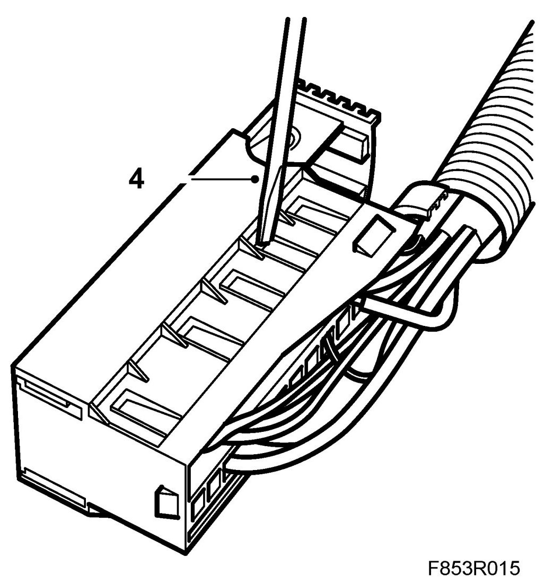
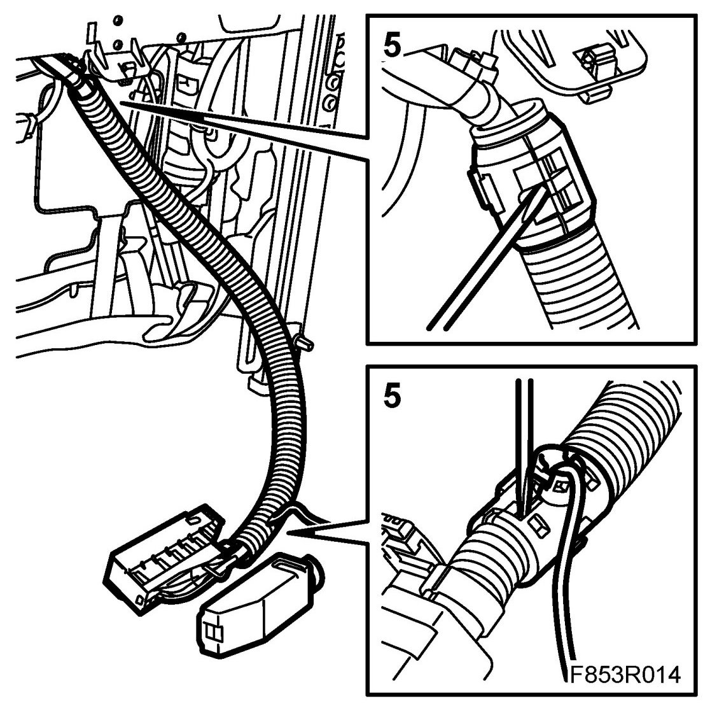
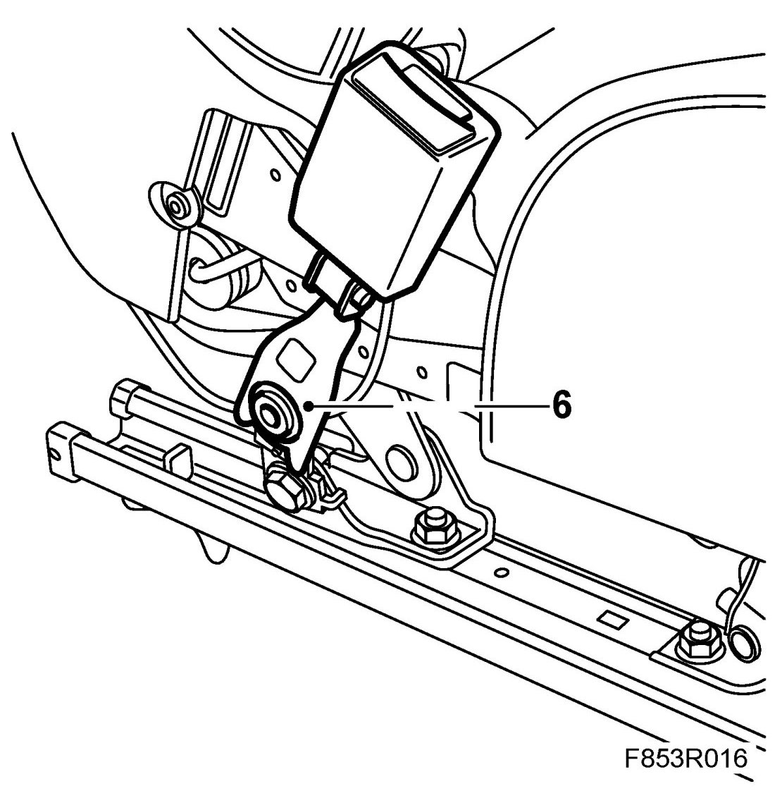
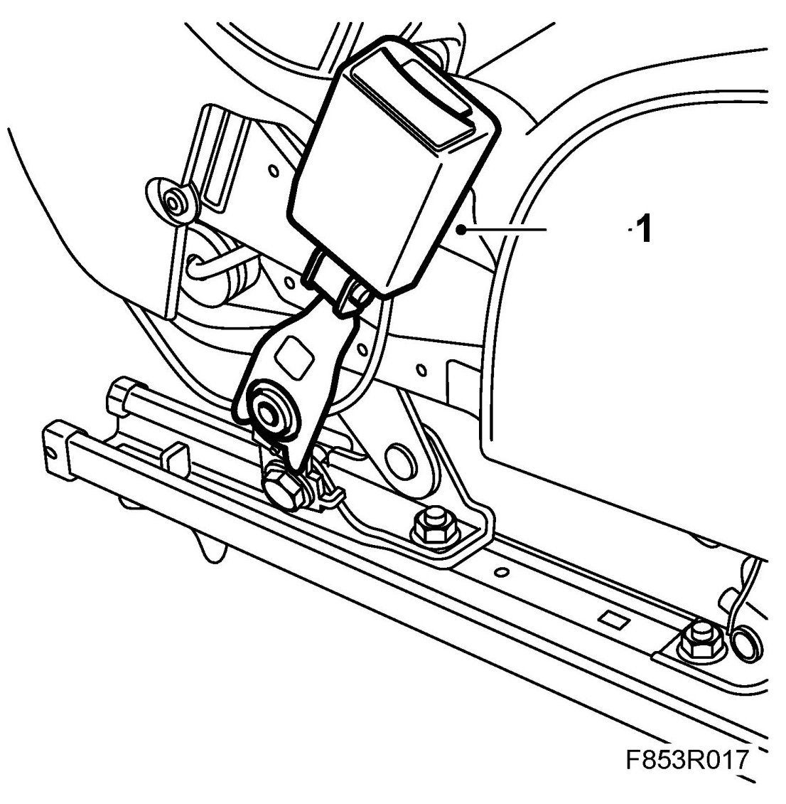
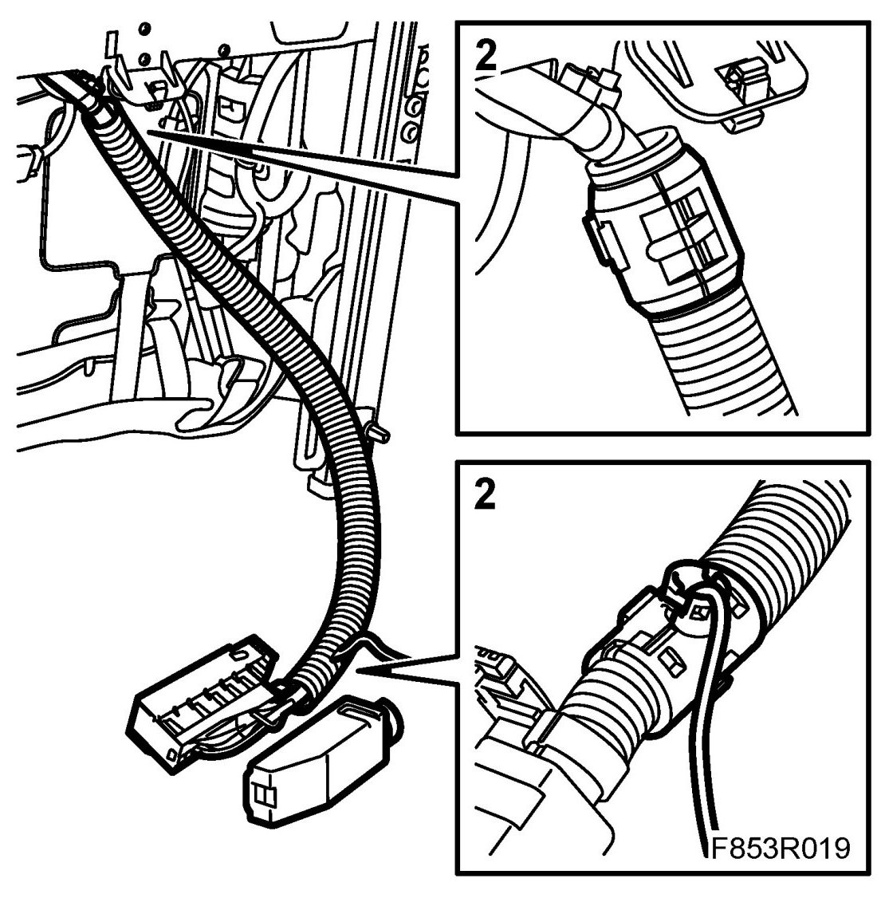
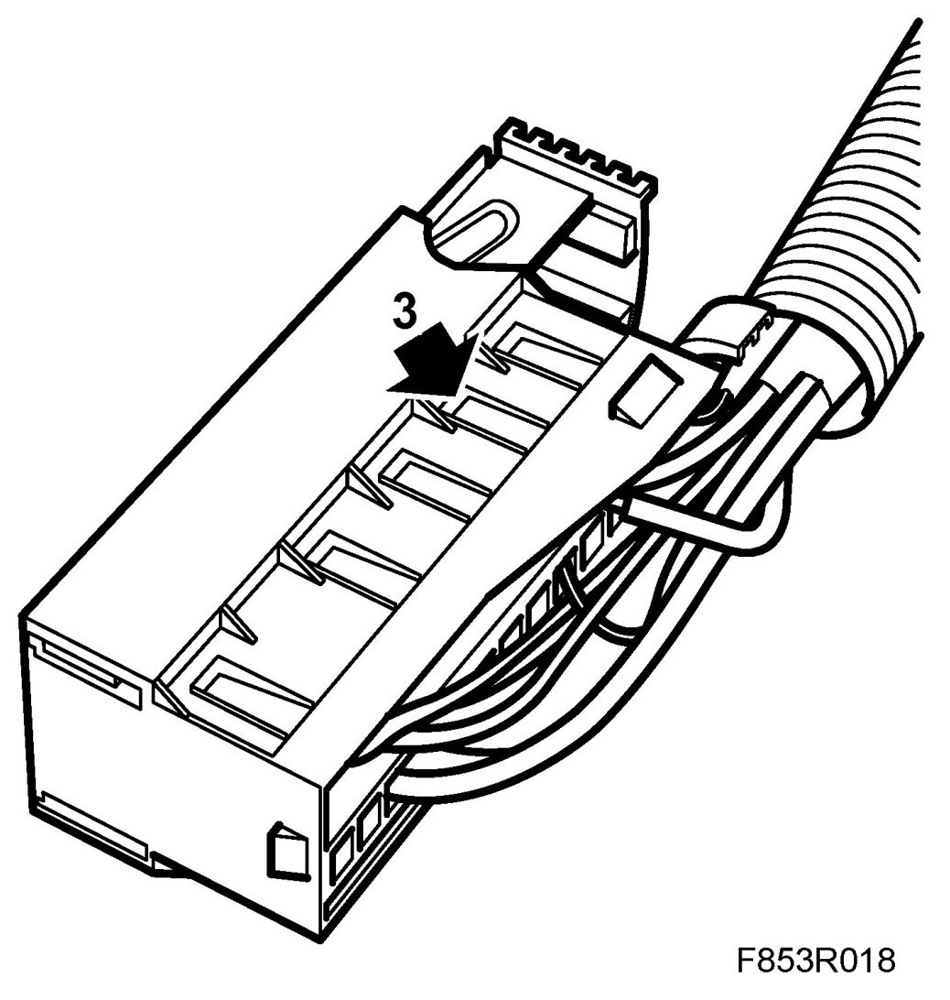
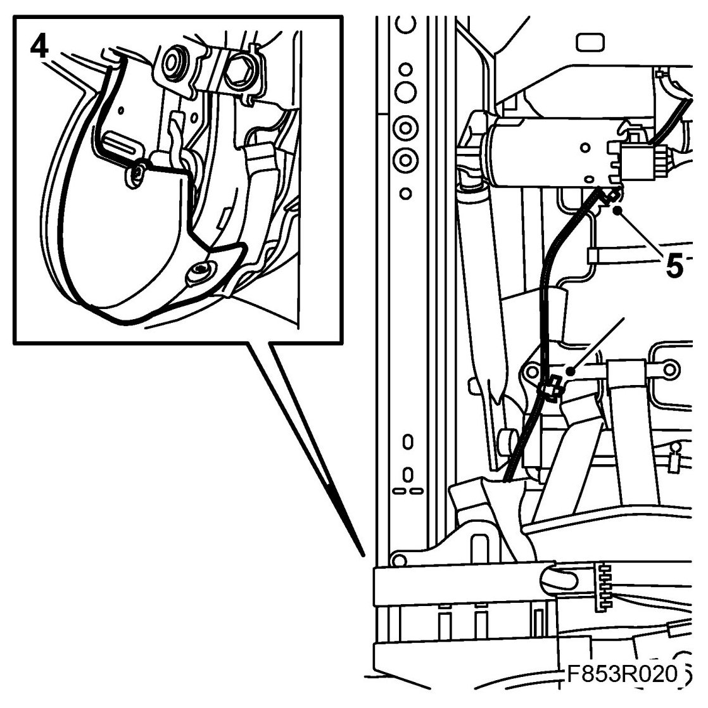

Front
Front Seat Belt Buckle
To remove
1. Remove the seat.
2. 4D, 5D: Undo the protective cover to release the belt buckle cable.
3. Cut off the cable tie holding the cable.
4. Open the seat's connector and loosen the seat belt buckle's connector.

5. Open the T-connector and end piece on the seat's wiring harness to release the seat belt buckle's cable.

6. Dismantle the seat belt buckle.

To fit
1. Fit the seat belt buckle.

Tightening torque 37 Nm (27 lbf ft)
2. Insert the seat belt buckle's cable in the wiring harness' T-connector and end piece and push together.

3. Connect the seat belt buckle's connector to the seat's connector.

4. 4D, 5D: Fit the protective cover.

5. Secure the seat belt buckle cable using a cable tie.
6. Fit the seat.
7. Check the operation of the seat belt buckle.